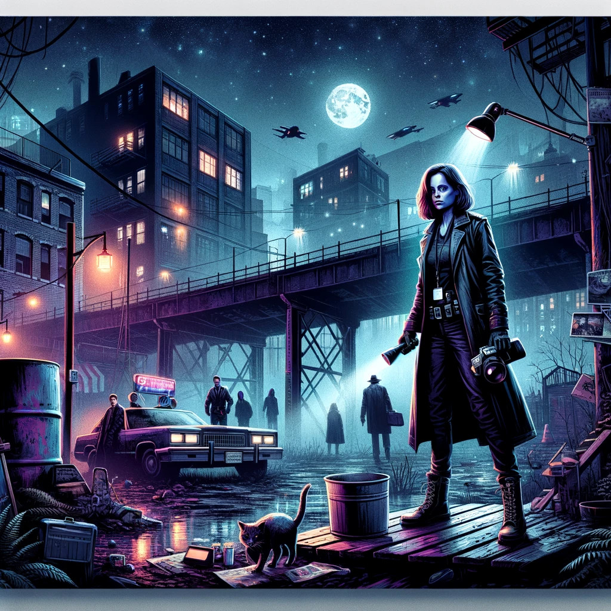
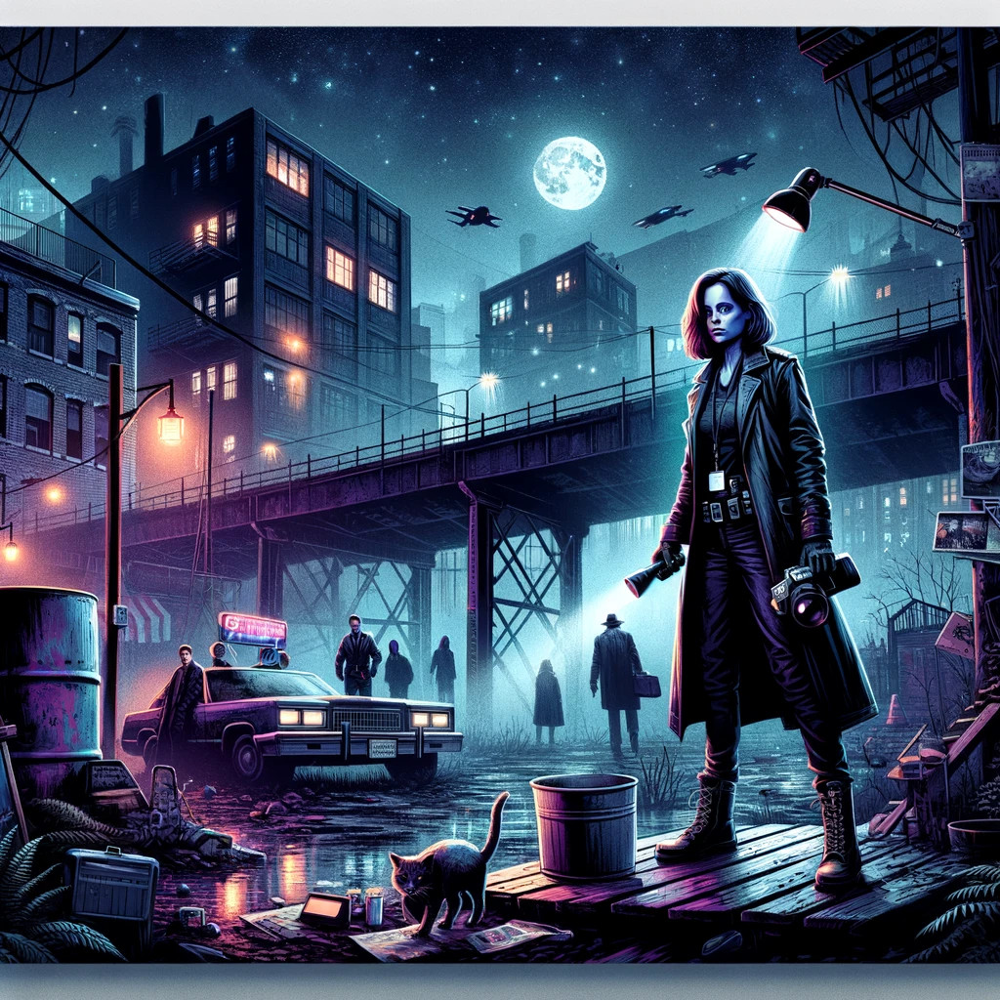

Other Side
Table of Contents
1. Other Side
 

1.1. Universe
1.1.1. One line
The urban legends world with an open future which displays our fears, hopes and fantasies in all their glory.
1.1.2. Properties
- Science + witchcraft.
- Parallel dimension appears from collective unconscious.
- Dimension and things from it change people physically and mentally.
- Folclore is an early manifestations of the dimension.
1.2. Setting
1.2.1. Meta
Urban Legends with low-grade superheroes.
1.2.2. Time
Our time.
1.2.3. References
- Primary
- X-Files video_series
Without aliens.
- Marvel's Netflix television series video_series comics
Low-grade superheroes: Jessica Jones, Daredevil, Iron Fist, The Defenders, The Punisher, Luke Cage
- Gotham TV series video_series
- American Gods book video_series
- Happy! video_series comics
- Fringe video_series
- Misfits video_series
- S.H.I.E.L.D. video_series comics
But low-grade heroes.
- Control game
- [RESEARCH] Stranger Things video_series
- [RESEARCH] Ghost in the Shell animation_series movie manga
- [RESEARCH] Deus Ex video_game
- [RESEARCH] Alan Wake video_game
- [RESEARCH] Unbreakable movie
- Otherside Picnic manga animation_series
- X-Files video_series
- Secondary
- SCP Foundation game
- The Craft movie
- Mieruko Chan manga animation_series
- Doom Patrol video_series comics
- Wellington Paranormal video_series
- Warhouse 13 video_series video_series
- John Constantine movie comics
- Mononoke don't confuse with "Princess Mononoke" animation_series
- Blade movie comics
- Watchmen movie
- Torchwood video_series
- First Wave video_series
- The Blacklist video_series
- Sin City movie
- Made in Abyss animation_series manga video_game movie
- Miss Peregrine's Home for Peculiar Children movie
- Dirk Gently's Holistic Detective Agency video_series
- X-Men comics movie video_series animated_series
- Night_Watch book movies
- Roadside Picnic book
- Metro 2033-x video_game book
- S.T.A.L.K.E.R. video_game
- Utopia video_series
- [RESEARCH] Carnival Row video_series
- [RESEARCH] Spriggan animation_series managa movie video_game
- [RESEARCH] Heroes video_series
- [RESEARCH] The OA video_series
- [RESEARCH] The Lost Room video_series
- [RESEARCH] Gateway book
- [RESEARCH] The Boys video_series
- [RESEARCH] John Wick movie
- [RESEARCH] The Dresden Files video_series book
- [RESEARCH] Kolchak: The Night Stalker video_series
Tremendous influence on X-Files.
- [RESEARCH] Twin Peaks video_series
- [RESEARCH] Hellraiser movie comics
- SCP Foundation game
- Other references on a separate page.
1.2.4. Heroes
- Primary
- Investigator (journalist, detective, special agent, advocate, lawyer)
Fox Mulder, Dana Scully, Jessica Jones, Jim Gordon, Harvey Bullock, Nick Sax (Happy!)
- Low-grade hero/villain (mutants, psychic)
Daredevil, Harley Quinn, Punisher, Shadow Moon (American Gods)
- Adventurer/freelancer
The Lone Gunmen (X-Files), Iron Fist, Selina Kyle, Sorawo Kamikoshi (Otherside Picnic)
- Mentor/experienced leader
- Puppeteer
Smoking Man, Riddler, Raymond Reddington, Mr. Wednesday (American Gods), Ra's al Ghul, Purple Man
- Scientist/engineer/mechanic specialized in paranormal
- Folclore creature (vampire, werewolf, zombie, ghost)
Mad Sweeney (leprecon), Happy (imagenery friend), Solomon Grundy (zombie)
- Investigator (journalist, detective, special agent, advocate, lawyer)
- Secondary
- Corrupted worker (politician, policeman, judge, priest)
- Mindless mutant
- Con artist
- Illegal trader (artifacts, information, weapons, drugs)
- Gray-moral entrepreneur (Tony Stark, Raymond Reddington, Saul Goodman)
- Hacker
- Representative of power (boss at work, agent of government/secret organization/corporation)
- Doctor/paramedic
- Person with two lives / alter ego
- Permanently injured person (mentally or physically): PTSD, amnesia.
- Familiar/pet from the other side
- Double agent
- Weirdness magnet
- Cyborg/AI
- Dangerous prisoner
- Incidental companion
- Priest/exorcist/cultist
- Reformed villain
- Spirit of the place (city, building, bridge, forest, etc.)
- Corrupted worker (politician, policeman, judge, priest)
1.2.5. Stories
- Primary
- Secondary
- Rescue mission
- Damsel in distress
- Path to success/riches (by any means)
- Changing of person's moral / corruption
- Tensions between countries because of powerful artifacts
- Fairy tale/meme becoming real
- Quest for unlimited powers
- Industrial espionage
- Long tail of the past
Consequences of the past actions/mistakes.
- Fall of the state institutions
- The good of a society vs the good of an individual
- Segregation
- Rescue mission
1.2.6. Signs
- Locations
- Artifacts
- Special military/force equipment
- Investigator's equipment
Mood board, white board, clothes, notebook, pen, badge.
- Ordinary thing that is an artifact
- Homemade equipment from artifacts
- Map of the other side
- Hi-tech implants
- Superpower drugs
- Legendary artifact: Holy Grail, Pandora's Box, Philosopher's Stone, Excalibur, etc.
- Computers with AI based on artifacts
- Special military/force equipment
- Biological anomalies
- Acquired deformities
- Small mutations
Fangs, increased hairiness, changed eye color, horns, tail.
- Manifestations of the paranormal
Ideal beauty/ugliness, wings, hooves, noticeable changes in the skin, breathing fire, ghost body.
- Strong allergy on something
- Prostheses/body built with artifacts
- Genetic heritage of mutations
- Acquired deformities
- Psychological anomalies
- Other
- Gray morality
- A Price to pay for a power/wish
- Technology based on artifacts
- Physical/logical anomalies
- Dark market
- Secret organizations
- Burocracy attributes: papers, outdated equipment, old cars, old buildings
- Portals
- Secrets: signs, ciphers, codes, passwords, diaries
- Access levels
- Police cordons
- Military operations
- Special transport
- Life of a "Pirate Ship"
Days of the FBI, newspaper editorial office, detective agency.
- Collective consciousness breakthrough into the real world
- Gray morality